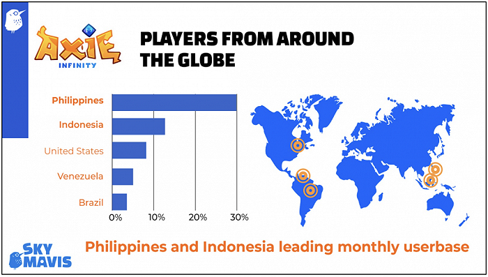
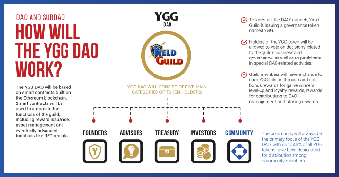
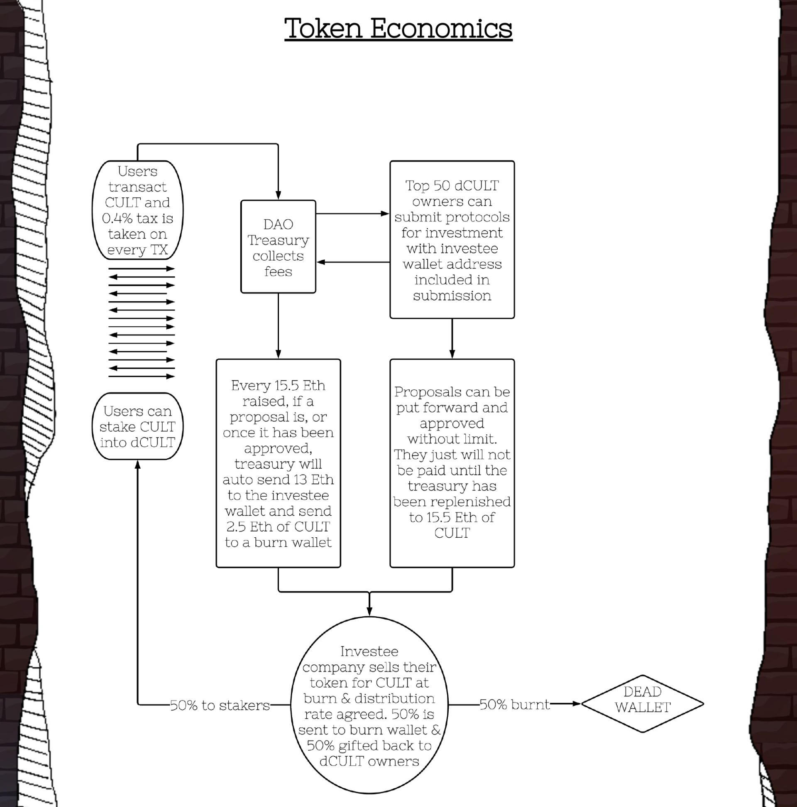
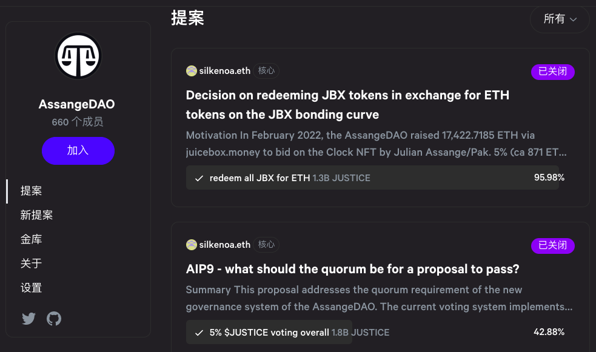

- 00 开篇词 Web 3.0：一场已经开启的互联网革命！.md.html
- 01 我们为什么需要Web 3.0？.md.html
- 02 公链：从计算分层开始.md.html
- 03 继续分层：身份和激励.md.html
- 04 NFT（一）：数据确权及其文化和商业价值的发现.md.html
- 05 NFT（二）：数据确权及其文化和商业价值的发现.md.html
- 06 边玩边赚能给游戏和电商带来新的商业模式吗？.md.html
- 07 Web 3.0社交和创作者经济.md.html
- 08 区块链：从底层重构金融.md.html
- 09 DeFi：“三无模式”开辟金融新蓝海.md.html
- 10 关于DAO的七个真相和两个趋势（一）.md.html
- 11 关于DAO的七个真相和两个趋势（二）.md.html
- 12 DeFi的空中楼阁能盖多高？.md.html
- 13 代码和法律，哪个更强？.md.html
- 14 Web 3.0正在形成的合力.md.html
- 特别放送 Yuga Labs：Web 3.0迪士尼的谛造之路.md.html
- 结束语 Web 3.0时代，你的创造和收获！.md.html
- 捐赠
11 关于DAO的七个真相和两个趋势（二）
你好，我是郭大治。
通过上节课的内容我们知道，作为一个创新的组织形态，DAO的效率优势主要源于代码自治。我们想要设立一个DAO，首先需要一个明确的行动目标，这个目标可以是商业盈利性质的，也可以完全是非盈利性质的；既可以是一个长期的经营目标，也可以是一个短期的行动方案。
而且DAO的适用场景也非常广泛，可以是从零起步，也可以是项目运营达到一定阶段之后，从中心化的方式向DAO的形式转换。当然，考虑到“代码自治”的前提是场景的线上化，业务模式比较简单的场景，比如投资等就更适合以DAO的形式设立。
那么，今天这节课，我们会继续来探讨DAO的真相，一起来看看商业模式、代币机制以及链下共识对于DAO的重要性。
真相五：商业模式大于治理结构！
上节课我们说过，DAO的核心诉求是功能设定。而设定功能的实现，也需要结合具体的商业环境和资源情况，通过商业模式来实现，组织架构和治理模式的设定也需要服从于商业模式的具体内容。
在前面第6讲里，我给你介绍了一款Play to Earn属性的现象级链游——Axie Infinity，以及由此催生出的一个新的业态，链游公会。而下面我要讲的 Yield Game Guild（YGG），正是链游公会领域的开创者，而且它的诞生也直接源于Axie Infinity。
以YGG的商业模式为例
Axie Infinity 的玩法我们已经大概了解过，我们知道玩家想要参与游戏的话，需要先拥有三只小精灵，然后才能获得参与战斗、获得代币奖励的机会。YGG通过推出“奖学金计划”，出借精灵给玩家，使得玩家仅需付出自己的时间和精力即可获得游戏代币的奖励，实现“零成本”参与游戏。
然后，玩家和YGG会一起抽取分成，按照7:2:1（玩家 : YGG : 链游公会辅导员）的比例分配玩家获得的奖励，这就是YGG的核心商业模式，它在Axie Infinity市场推广的过程中发挥了重要作用。从数据上看，曾通过YGG“奖学金计划”参与游戏的用户仅在菲律宾一国内，就达到了上百万之多。

YGG正是通过DAO的形式，实现了上述的商业模式，还启动“Guide Advancement Program（公会进阶计划）”，对社区用户持续进行激励。
所谓“公会进阶计划”的主要内容，就是提出各种有利于社区扩展的任务目标，凡是完成任务的社区成员，就可以获得YGG代币奖励。比如，进阶计划第一季的任务清单就包括：
- 在21周之内，达到Axie Infinity最高阶玩家；
- 完成8次以上的直播或者对话活动；
- 推荐10名YGGSLP入金用户等。
由此我们可以发现，YGG的社区激励实际上变成了生态发展计划，虽然YGG DAO在社区的去中心化治理方面比较欠缺，但对于扩展生态来说，这些动作都是有益而且也是必要的。这一点，也算是去中心化色彩较为薄弱的DAO的共性吧。

YGG DAO开启了链游公会这一赛道，目前这一赛道上还有 Merit Circle DAO（MC ）、GuildFi DAO 等链游公会，各个链游公会的业务模式其实都比较相近。
其中，MC主打Flow生态项目，虽然Flow公链NFT项目的热度比较高，但尚未诞生流量较大的链游，所以，MC也兼顾其他公链的项目；GuildFi DAO在开展NFT租赁业务的同时，也主推一个跨游戏平台通用的个人身份，如果这一方案被市场接受，也有望降低游戏门槛，同时为游戏玩家带来使用上的便捷。
链游公会模式的缺陷
不过，由于链游公会的业务模式高度依赖链游的经济模型（即游戏资产的租赁，游戏攻略、培训、拉新和账户管理等内容），所以，链游市场的发展节奏，也会对链游公会的发展产生直接影响。比如自2021年Axie Infinity开创了链游赛道之后，在接下来的一年时间里，链游市场并没有诞生第二款流量规模能够达到Axie的项目。
所以，不管链游公会有多少家，它们都只能针对Axie的小精灵开展资产租赁业务，链游公会的发展当然会受到影响。
此外，虽然链游公会的生长严重依赖于链游，但链游对于链游公会的态度却是“又爱又恨”，甚至有的链游明确表示，不支持链游公会开展NFT资产租赁业务。这方面最典型的代表项目就是我们之前讲过的 STEPN，一款以“Walking to Earn”为主要特点的健身游戏。
因为在STEPN看来，任何链游“X to Earn”的经济模型都有一个衰退周期，对于链游项目本身来说，如何延长项目生命周期是关系到项目存亡的大事，而资产租赁业务的存在，会严重缩短项目生命周期。所以说，如何开创新的业务模式，是摆在众多链游公会面前的一件主要任务。
真相六：代币激励是DAO治理的必要内容，但一个好的代币激励制度却没有一个标准模板！
现在我们知道，代币激励是DAO治理中的重要内容，但代币激励在DAO运营中应该如何定位呢？它具体发挥什么作用？对于DAO而言，又要如何设定代币激励制度？这些问题，都需要我们进行深度探讨。
下面，我们就通过几个典型例子，来看看代币激励制度的设计是如何影响DAO的治理吧。
Cult.DAO
2022年1月，以推动“去中心化应用”发展为宗旨的 Cult.DAO，通过在Unicrypt预售的形式走进了公众视野，并且基于代币激励制度的设计，它发展成为了一个运营稳定的投资DAO。
Cult.DAO在一开始其实就设计了完整的代币方案，大体意思就是一半的代币CULT用于预售，而预售所得的ETH和剩余的一半CULT组成LP（即提供流动性做市商的凭证），用于提供流动性。对于投资业务而言，其主要业务内容无外乎筹资、决策、投资和变现，对于Cult.DAO来说也是如此。
好了，现在我们知道，Cult.DAO预售的主要资金已经用于添加流动性或长期锁定，那么它投资所需的资金从哪里来呢？
Cult.DAO的方案是，CULT-ETH LP获得手续费的一半会自动进入“财库”，而且，每当“财库”的资金总量价值达到15.5个ETH的时候，就会通过投票资助一个项目，但被资助项目只能获得与13个ETH等值的CULT，而剩余的价值2.5个ETH的CULT会被销毁。
这样的设计，一方面是治理代币CULT具有直接的销毁机制，比较容易产生通缩效应。另一方面，被资助的项目只能获得价值13个ETH的CULT，这个金额对于一个初创项目来说，并不会在经济上产生太大的帮助，但在扩大项目影响、获得种子用户这方面，会有直接的帮助。

此外，这样的设计还产生了另外一个效果，就是如果项目方希望获得资助，那项目方就会有大量买进CULT，并通过质押进入前50名来提名自己项目的冲动，而这种行为在事实上，其实就扩大了CULT的需求，从而也能让所有CULT用户获益。
Bankless DAO
代币激励机制也在 Bankless DAO 的运营中发挥重要作用。
Bankless DAO发行了自己社区的治理代币BANK，主要用途在于明确社区成员和社区发展进行长期绑定的身份。我们在Bankless DAO参与各种公会虽然没有任何门槛，但如果想要参与社区投票，是需要持有一定数量的BANK的，这一点也是充分体现了“社区利益导向治理”的精神。
另外，BnaklessDAO虽然发行了自己的治理代币，但并没有进行任何形式的募资，在BANK的分配方案中，30%是分配给了初始给社区做出贡献的成员，70%则全部分配给了国库（其中的30%是一次性分配给国库，而剩余的40%是在3年时间内线性释放给国库）。
所以，BANK的持有人中，既没有专业的投资机构，也没有所谓的团队成员，BANK代币也没有和哪个交易所合作，将持币人群扩大到二级市场，BANK只在少数去中心化交易所中可以交易，交易量不高而且价格也比较稳定。也许相对于价格的暴涨暴跌，正是这些特征才能让BANK更好地发挥社区激励的作用。
我们从以上案例中，其实就可以发现，代币机制确实对于DAO的治理会发挥重要的作用。作为投资DAO，Cult.DAO从筹资到投向确定中，都离不开治理代币CULT；Bankless DAO既没有募资也没有预留，而且还刻意弱化了治理代币的金融属性，但代币激励在协调社区成员行为中，仍然发挥了重要作用。
所以，对于DAO来说，代币激励制度是必要的，但却没有固定模式，也许对于DAO而言，只有适应商业模式的代币激励机制，才是最适合的。
真相七：“代码自治”仍然离不开“链下共识”！
在上节课，我在讲DAO的功能时，提到了一个小例子，即通过法律的手段，让维基百科的创始人阿桑奇（Assange）重获自由，这个DAO就是 AssangeDAO。
AssangeDAO在社区内设立了一个由5名成员组成的委员会，负责维护社区运营。2021年12月，AssangeDAO发起社区募捐，募资的主要用途是用来支付法律诉讼的相关费用，以帮助阿桑奇重获自由，募资共收到了12119.6ETH。但令人意想不到的是，在没有和社区进行任何沟通的情况下，运营委员会在第一次募集之后的第二天，就发起了第二次募集，而且依然筹集到了3950个ETH。
这种行为直接引起社区的强烈不满，但管理团队不仅没有做出明确的解释，反而是“强势”地将提出异议者踢出社区，最后也没有针对开展第二次募集的原因进行说明，只是申明“不再进行下一轮的募集”。
但事实上，下一轮的募集还是上线了，只不过是通过一个更隐蔽的方式开展。参与项目管理的成员之一Pak，在AssangeDAO两次募集之后，发起了一起相关主题的NFT Mint活动，虽然标明是免费Mint，但发起Mint合约时默认支付0.1ETH的手续费。
更超出用户想象的是，其实默认的手续费可以手动修改为0，但大多数用户往往都习惯于按照默认值进行操作。结果，这番操作又为项目筹到了670个ETH。委员会对于募集资金的坚持真是超出了所有人的想象。
当然，这还不算完，在接下来的几天后，同样还是那个推出NFT Mint活动的Pak，又发起了一次NFT拍卖活动，本来竞拍价格达到5000ETH之后，已经没有人再提出新的报价，但“运营委员会”一次性将筹集得到的15950个ETH全部进行报价，最终当然竞拍成功。
这种“一意孤行”的操作方式当即在社区引起了强烈反响，于是一份要求Pak退还拍卖所得ETH的提案被发起，并获得了社区88%的投票支持，但提案并没有被运营团队执行。

可以说，AssangeDAO为DAO的运营开启了一次非常危险的先例，仅靠社区成员的热情和主动性达成的“软共识”，可以成为社区建立的根基，但即使将“软共识”和社区投票形成的“硬共识”加在一起，也无法为DAO的运营提供最必要的保证。看来更硬核的规则，还是需要通过现实世界的法律来提供了。
所以说，尽管DAO肩负着在“公司制”之外创造一种全新组织形态的使命，凭借“Code is the law”在社区协调和治理方面表现出的比较优势，使得我们对于DAO的应用前景充满期待，但一个不可回避的事实是，DAO的发展壮大还不得不需要在Code之外，寻找另外一个维度的支撑，使其能和现实世界的诸多规则进行融合。
因为，“代码自治”的效力只能体现在虚拟世界，如果虚拟世界和现实世界处于一种分裂的状态，我们关于探索Web 3.0和数字经济的意义，也将大打折扣。只有在虚拟世界和现实世界之间能够通过某种机制实现连接，那么，虚拟世界在信息处理方面的优势，才可以和现实世界进行结合，并对人类的生产和生活产生实质性的影响。
事实上，我们对于人类数字化生存的终局都缺乏明确的判断，但现阶段，DAO的发展一定需要找到一种将DAO的治理效果，传递到现实世界的有效机制，显然，法律就是一种可以满足这种需求的现实存在。
小结
在这两节关于DAO的七个真相的探讨中，我们深入了解了DAO的概念及其效率优势的主要来源，也知道了DAO作为一种创新的组织形态，所具有的高度灵活的适应性，以及组织目标和业务模式在支撑DAO发挥其组织效能时的基础性作用。
这节课里，我们强调代币激励机制是DAO发挥组织协调作用的重要手段，但只有在代币机制能够很好地和场景进行结合的时候，它才能更好地发挥激励作用。另外，“代码自治”体现了DAO的效率优势，但我们也要清楚，“代码自治”的有效范围只局限在链上，链上的“代码自治”加上链下的“合规框架”才能支撑起DAO的可持续运营。
所以，从这个角度来看，DAO的发展趋势强调两点：一是通过各种能够与场景结合的通用型工具的开发，来拓展“代码自治”的有效范围，让“代码自治”不再成为设立DAO的制约和短板；二是还要强调DAO关于主体合规和行为模式的制度建设，只有把现实世界的规则和虚拟场景的需求相互结合起来，才会对DAO的运营形成更加现实的支撑。
思考题
关于DAO的创业方向，你能想到哪些？欢迎在留言区分享你的答案，也欢迎你把今天的内容分享给更多的朋友。
© 2019 - 2023 Liangliang Lee. Powered by gin and hexo-theme-book.